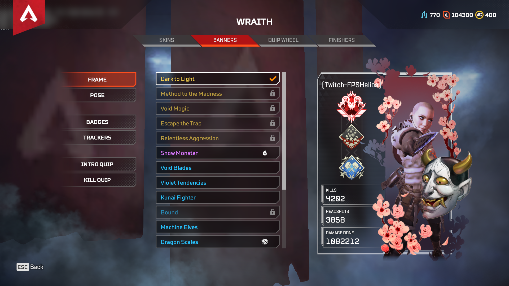

I *censored* love this game!!!There is so much stuff to talk about we can be here for days! Apex Legends is the first game where I found a community that made me feel like I belong, and I have met some great people online through this game. Also, Apex Legends had a lot of "firsts" for me, and without it lots of things would have never happened. Apex Legends was the first game that I actually participated, won and made money off of tournaments. It was also the first game that I at least "semi-pro" at. Some of my best memories were from this game, my best one was my first ever 20kill game and my most recent one was only a month or two ago where I got to play with #4 (#1 in North America) and the #69 (yes, he was actually #69 :D) people on the ranked leaderboards for PC (no cross platform on Apex yet). Since then, I have gotten the highest rank one can get in the game and placed top #3000s global on PC.
My current stats in-game :)
Getting the highest rank in the game
Playing with the #4 and #69 in the world